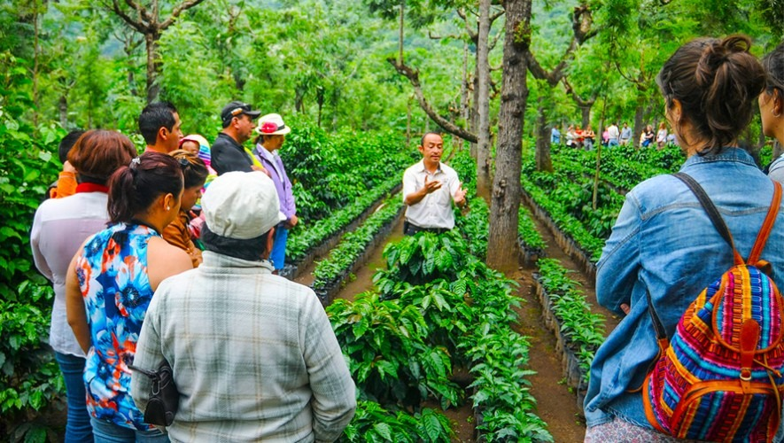
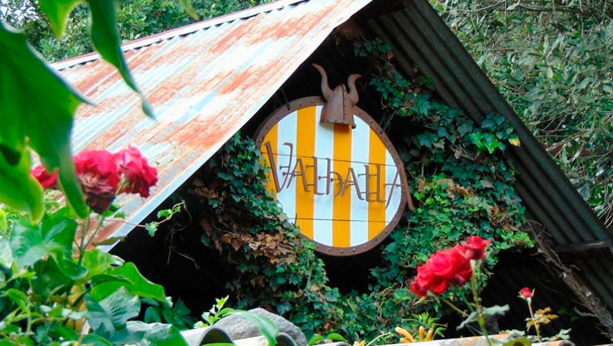
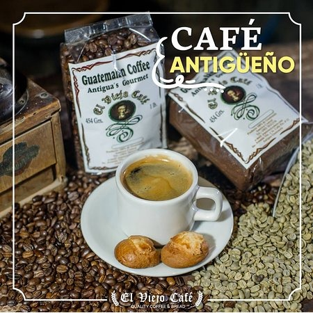

Where can you enjoy the best coffee?

Filadelfia Farm

Finca Valhalla Macadamia Farm

Café Artesanal El Viejo Café
Antigua Guatemala Coffee has gained international recognition and is highly appreciated by coffee lovers around the world. Its superior quality and refined flavor profile make this coffee a unique and delicious experience for those who have the opportunity to taste it.